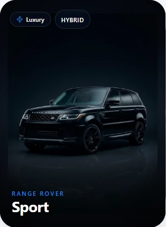
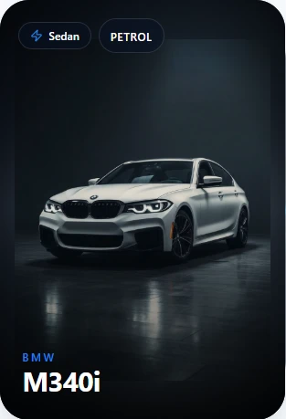
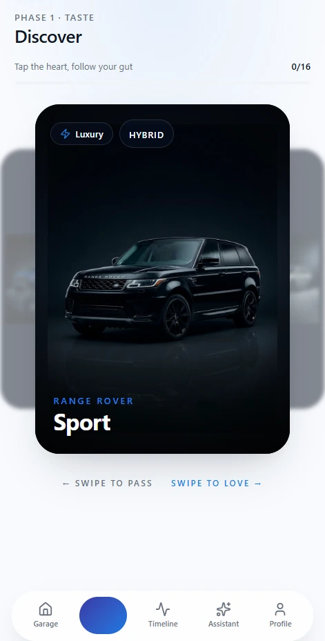

Seznam oglasov
↓ NASLEDNJI DRUŽINSKI AVTO
Avto ti je všeč.
Pa ustreza
tvojemu življenju?
Oglasov ne manjka.
Manjka jasen »zakaj ta avto?«
Predlagani prvi fokus: kupci v Sloveniji.

VŠEČ MI JE.
01 Kaj potrebujem?
02 Kako vozim?
03 Koliko me bo stal?
VELIKO MOŽNOSTI ≠ DOBRA ODLOČITEV
Ilustrativen problem in predlagani segment; uporabniška validacija še sledi.
OSEBNI SVETOVALEC ZA IZBIRO AVTOMOBILA
Najprej ti.
Potem avto.
Tvoj okus. Tvoj vsakdan.
Tvoj finančni okvir.
Ne še en seznam oglasov.
Izbor, ki ga razumeš.
Izbor, ki ga razumeš.
♡OKUSKaj mi je všeč?
◎POTREBEKako živim?
€PRORAČUNKaj je smiselno?
DriveOPOSEBNO UJEMANJE
PREDLAGANI REZULTAT
3 smeri.1 tvoja odločitev.+ jasna razlaga
Produktni koncept iz master briefa; kakovost priporočil se preveri v pilotu.
PRODUKT V AKCIJI PROTOTIP
Od občutka
do utemeljene
izbire.
Pokaži, kaj ti je všeč.
Izbire avtomobilov razkrijejo tvoj okus.
Dejanski zasloni in posnetka iz izvornega PPT-ja.
Prikazane cene, stroški in odstotki so demo podatki.


TASTE · statični zaslon
Vodena demonstracija: 6 s TASTE + 20 s KNOW + 16 s MATCH. Ni povezave z aplikacijo v živo.
VREDNOST ZA KUPCA
Manj ugibanja.
Več jasnosti.
3 razumljive
Samo nakupna cena
↓Pogled na
lastništvo.
»Kaj pa zdaj?«
↓Od izbora
do stika.
CILJ PILOTA< 5 min
do izbora, ki ga kupec zna utemeljiti.
Ni še izmerjen rezultat.Predlog vrednostne ponudbe in merljivega cilja; opis ne predstavlja že dokazanega prihranka.
EN JASEN PRIHODKOVNI MODEL PREDLOG
Kupec dobi smer.
Prodajalec dobi namen.
ZA KUPCA BREZPLAČNO
01
→Profil
Potrebe + proračun
02
→Privolitev
Želim stik
03
Sprejem
Prodajalec potrdi
◆
Predlagano pravilo zaupanja:
plačilo ne spreminja priporočil.
TESTNA CENA ZA PRODAJALCA
75€
za sprejeto
kvalificirano povpraševanje
Ne za klik. Ne za obljubljeno prodajo.
Cena, plačnik in pogoji še niso validirani. Ena obračunska enota = eno unikatno sprejeto povpraševanje.
OD PRIKAZA DO DOKAZA
Prikaz imamo.
Dokaz trga sledi.
DANES / V GRADIVUUporabniški tok
Uporabniški tok
TASTE → KNOW → MATCH
Prikaz od okusa do priporočila.
PrikazUporabnostPlačilo
CILJ / NASLEDNJIH 6 MESECEV
100
+ciljnih kupcev
v testu
3
prodajalci, ki
plačajo znova
Ne več funkcij. Dokaz vrednosti.
Cilji niso doseženi rezultati. Intervjuji, aktivni uporabniki in prihodki v prejetem gradivu niso dokumentirani.
FOKUS NAMESTO TRDITVE »NIMAMO KONKURENCE«
Ne tekmujemo
v številu oglasov.
Oglasnikinpr. AutoScout24
Ponudba in iskanje avtomobilov.
CarwowIzbira + primerjava + ponudbe
Že rešuje del istega problema.
DriveOPNaš predlagani fokus
Okus + potrebe + stroški.
Razložljiva osebna odločitev.
PREDNOST, KI JO GRADIMOVedeti,
Ni še dokazan obrambni jarek.
Vedeti,
zakaj je izbira
ustrezala.
Lokalni fokus + povratne informacije o dejanskih izbirah.
Podatkovna prednost je načrt.Ni še dokazan obrambni jarek.
Vira: AutoScout24 in Carwow, pregled 21. 11. 2026. Primerjava fokusa, ne izčrpen seznam funkcij.
SLOVENIJA / NOVI OSEBNI AVTOMOBILI / 2025
Pravi pogon je odvisen
od tvojega dneva.
31%
hibridnih
11%
električnih
Lahko polniš doma?
Koliko voziš?
Kaj si lahko privoščiš?
NAŠA TEZA
Več različnih pogonov.
Večja vrednost osebne razlage.
Vir: SURS, Registrirana cestna motorna vozila in prikolice, 2025; objava 8. 4. 2026. Tržna interpretacija je naša.
VELIKOST TRGA / PRIHODKI OD POVPRAŠEVANJ, NE VREDNOST AVTOV
Slovenija za dokaz.
Evropa za rast.
TAM EU / NOVI AVTI
10,82mio.novih registracij v 2025
≈ 812 mio. € / leto
Modelna zgornja mejapri 75 € na kontakt.
SAM SLO / ZGORNJA MEJA
56.778novih navadnih osebnih avtov v 2025
≤ 4,26 mio. € / leto
Pred zožitvijo na ciljni segmentin potrditvijo podatkovne pokritosti.
SOM CILJNI SCENARIJ / LETO 3
3.600plačanih povpraševanj na leto
270.000 € / leto
20 partnerjev × 15 kontaktovna mesec × 12 mesecev.
Vira: ACEA in SURS, 2025. TAM/SAM: največ 1 plačan kontakt na registracijo. Cena in SOM sta predpostavki; rabljeni avti niso vključeni.
ILUSTRATIVNI SCENARIJ NE DEJANSKI PRIHODKI
Rast iz
preverljivih korakov.
LETNI PRIHODKI (€)
300k200k100k0
22,5k
Leto 1
5 × 5 × 12
300 kontaktov90k
Leto 2
10 × 10 × 12
1.200 kontaktov270k
Leto 3
20 × 15 × 12
3.600 kontaktovCILJ NA PLAČANO POVPRAŠEVANJE
Testna cena75 €
Variabilni stroški≤ 25 €
Prispevek≥ 50 €
Pred plačami, razvojem,
drugimi fiksnimi stroški in davki.
To ni napoved dobička.
Formula: povprečno aktivni partnerji × sprejeti kontakti/mesec × 12 × testna cena. Prva polna modelna leta; zneski brez DDV.
EKIPA DRIVEOP
Posel in tehnologija.
En skupen cilj.
01 / POSLOVNA STRAN
Marketing in prodaja
Christjan
CEO · CMO
Poslovni modelMarketing in prodaja
02 / INFORMACIJSKA STRAN
Produkt in podatki
Miha
CIO
Informacijska zasnovaProdukt in podatki
Naslednji skupni fokus: zanesljiv produkt + plačljiv pilot.
Imeni, vlogi in fotografiji: izvorni PPT, slajd 11. Skupni naslednji mejnik: validiran plačljiv pilot.
EN VLOŽEK. EN MEJNIK. DELOVNI PREDLOG / 6 MESECEV
50.000 €.
En jasen dokaz.
Produkt + podatki25.000 €
Pilot + pridobivanje kupcev15.000 €
Merjenje + zasebnost5.000 €
Rezerva5.000 €
KAJ MORA TA VLOŽEK DOKAZATI
100resničnih kupcev
v testu
v testu
3prodajalci plačajo
in naročilo ponovijo
in naročilo ponovijo
VALIDIRAN PLAČLJIV PILOT
Ti ne iščeš avta. Avto najde tebe.DriveOP
Predlog zneska in razreza, ne potrjena finančna potreba. Ustanovitelja ga potrdita in prilagodita pogojem natečaja.
0:00 - 0:2501 / 12